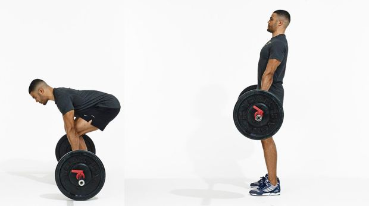

Conventional Deadlift
- Equipment Needed:
- Barbell
- Weight Plates
- Steps to perform:
- Load bar with weight and place bar on the ground
- Bend over and grab bar
- To set up the movement, keep back neutral while grabbing bar
- Push with legs, extend hips, and raise chest until barbell is at waist level and body is fulling extended
- Lower back onto ground and repeat until the desired number of reps is reached